install.packages(c("dplyr", "plyr", "corrplot", "ggfortify"))RNA-seq pre-processing
Introduction
In this tutorial we’ll explore the exploratory gene expression analysis using Bioconductor packages.
R packages installation
We install R packages with the install.packages function.
Bioconductor installation
Bioconductor is a free, open-source, and open-development software project. It is based primarily on the statistical programming language R and provides packages for the analysis and interpretation of high-throughput genomic data. For more information, see the Bioconductor website.
Installing Bioconductor requires the BiocManager package.
if (!require("BiocManager", quietly = TRUE))
install.packages("BiocManager")
# Last version of Bioconductor
# BiocManager::install(version = "3.23")Bioconductor packages installation
To install core packages, necessary for all practical lectures, we use the install() function of BiocManager package.
# BiocManager::install(c("limma", "EDASeq", "edgeR"))Load packages
library(limma)
library(EDASeq)
library(edgeR)
library(dplyr)
library(plyr)
library(corrplot)
library(ggfortify)
library(SummarizedExperiment)SummarizedExperiment
In this tutorial, we will use the lung adenocarcinoma (LUAD) dataset from The Cancer Genome Atlas (TCGA), a program that collects genomic mutations data from different types of tumors.
We will load the dataset previously saved in an RDS file.
luad <- readRDS("/home/ilaria/Documents/GFC/esercitazioni/data/luad.rds")
luadclass: RangedSummarizedExperiment
dim: 60660 539
metadata(1): data_release
assays(2): raw_count normalized_count
rownames(60660): ENSG00000000003.15 ENSG00000000005.6 ...
ENSG00000288674.1 ENSG00000288675.1
rowData names(10): source type ... hgnc_id havana_gene
colnames(539): TCGA-44-2665-01A-01R-0946-07
TCGA-97-7937-01A-11R-2170-07 ... TCGA-97-7554-01A-11R-2039-07
TCGA-97-8547-01A-11R-2403-07
colData names(93): barcode patient ... paper_Ploidy.ABSOLUTE.calls
paper_Purity.ABSOLUTE.callsclass(luad)[1] "RangedSummarizedExperiment"
attr(,"package")
[1] "SummarizedExperiment"The object luad is a RangedSummarizedExperiment, a specialized subclass of SummarizedExperiment. The main difference is that a RangedSummarizedExperiment object contains genomic positions associated with its rows.
The SummarizedExperiment class is a data structure commonly used in the analysis of biological data, such as genomic or transcriptomic datasets. It is designed to store experimental measurements (e.g., a count matrix) together with associated metadata describing the features and the samples.

A SummarizedExperiment object contains several components useful for storing and analyzing high-throughput genomic data:
assays()returns a list of gene expression matrices (e.g., raw and normalized counts). In the luad object, raw_count contains the raw count matrix with 60,606 genes (rows) and 539 samples (columns). For this tutorial, we will focus on raw_count and ignore the other matrix, normalized_count.
assays(luad)List of length 2
names(2): raw_count normalized_count# To visualize the raw count matrix we can use assay() function
class(assay(luad, "raw_count"))[1] "matrix" "array" # We visualize the first six genes and the first six samples
assay(luad, "raw_count")[1:6, 1:6] TCGA-44-2665-01A-01R-0946-07 TCGA-97-7937-01A-11R-2170-07
ENSG00000000003.15 4236 4337
ENSG00000000005.6 1321 0
ENSG00000000419.13 1799 3201
ENSG00000000457.14 1301 1367
ENSG00000000460.17 376 625
ENSG00000000938.13 823 307
TCGA-44-2665-01B-06R-A277-07 TCGA-64-5774-01A-01R-1628-07
ENSG00000000003.15 401 4884
ENSG00000000005.6 73 0
ENSG00000000419.13 154 1736
ENSG00000000457.14 221 647
ENSG00000000460.17 102 543
ENSG00000000938.13 79 245
TCGA-78-7220-01A-11R-2039-07 TCGA-78-7155-01A-11R-2039-07
ENSG00000000003.15 2906 3875
ENSG00000000005.6 0 8
ENSG00000000419.13 2724 1171
ENSG00000000457.14 909 421
ENSG00000000460.17 760 814
ENSG00000000938.13 286 162colnames()returns a vector containing the sample names;
colnames(luad)[1:6][1] "TCGA-44-2665-01A-01R-0946-07" "TCGA-97-7937-01A-11R-2170-07"
[3] "TCGA-44-2665-01B-06R-A277-07" "TCGA-64-5774-01A-01R-1628-07"
[5] "TCGA-78-7220-01A-11R-2039-07" "TCGA-78-7155-01A-11R-2039-07"colData()returns information about the samples, e.g., sample name, survival, sex, age, and other attributes. These data are stored in a DataFrame object. Each row of the DataFrame corresponds to a sample (matching the columns of the SummarizedExperiment object), while each column represents a specific attribute of the samples;
class(colData(luad))[1] "DFrame"
attr(,"package")
[1] "S4Vectors"colData(luad)[1:6, 1:10]DataFrame with 6 rows and 10 columns
barcode patient
<character> <character>
TCGA-44-2665-01A-01R-0946-07 TCGA-44-2665-01A-01R.. TCGA-44-2665
TCGA-97-7937-01A-11R-2170-07 TCGA-97-7937-01A-11R.. TCGA-97-7937
TCGA-44-2665-01B-06R-A277-07 TCGA-44-2665-01B-06R.. TCGA-44-2665
TCGA-64-5774-01A-01R-1628-07 TCGA-64-5774-01A-01R.. TCGA-64-5774
TCGA-78-7220-01A-11R-2039-07 TCGA-78-7220-01A-11R.. TCGA-78-7220
TCGA-78-7155-01A-11R-2039-07 TCGA-78-7155-01A-11R.. TCGA-78-7155
sample shortLetterCode
<character> <character>
TCGA-44-2665-01A-01R-0946-07 TCGA-44-2665-01A TP
TCGA-97-7937-01A-11R-2170-07 TCGA-97-7937-01A TP
TCGA-44-2665-01B-06R-A277-07 TCGA-44-2665-01B TP
TCGA-64-5774-01A-01R-1628-07 TCGA-64-5774-01A TP
TCGA-78-7220-01A-11R-2039-07 TCGA-78-7220-01A TP
TCGA-78-7155-01A-11R-2039-07 TCGA-78-7155-01A TP
definition sample_submitter_id
<character> <character>
TCGA-44-2665-01A-01R-0946-07 Primary solid Tumor TCGA-44-2665-01A
TCGA-97-7937-01A-11R-2170-07 Primary solid Tumor TCGA-97-7937-01A
TCGA-44-2665-01B-06R-A277-07 Primary solid Tumor TCGA-44-2665-01B
TCGA-64-5774-01A-01R-1628-07 Primary solid Tumor TCGA-64-5774-01A
TCGA-78-7220-01A-11R-2039-07 Primary solid Tumor TCGA-78-7220-01A
TCGA-78-7155-01A-11R-2039-07 Primary solid Tumor TCGA-78-7155-01A
sample_type_id tumor_descriptor
<character> <character>
TCGA-44-2665-01A-01R-0946-07 01 Primary
TCGA-97-7937-01A-11R-2170-07 01 Primary
TCGA-44-2665-01B-06R-A277-07 01 Primary
TCGA-64-5774-01A-01R-1628-07 01 Primary
TCGA-78-7220-01A-11R-2039-07 01 Primary
TCGA-78-7155-01A-11R-2039-07 01 Primary
sample_id sample_type
<character> <character>
TCGA-44-2665-01A-01R-0946-07 a0863fa6-515c-44fa-8.. Primary Tumor
TCGA-97-7937-01A-11R-2170-07 cb0017ba-aee1-4046-8.. Primary Tumor
TCGA-44-2665-01B-06R-A277-07 9c146f5d-ca52-4cb9-a.. Primary Tumor
TCGA-64-5774-01A-01R-1628-07 252c5d60-7033-44c3-8.. Primary Tumor
TCGA-78-7220-01A-11R-2039-07 98038913-75d0-41a6-a.. Primary Tumor
TCGA-78-7155-01A-11R-2039-07 284de41b-6ad8-4c29-9.. Primary Tumor# We use table() function to count living and deceased patients
table(luad$paper_Survival)
DECEASED LIVING
70 177 rownames()returns a vector of gene IDs, specifically Ensembl stable identifiers. The number after the dot (e.g., .15 in ENSG00000000003.15) indicates the version number of the gene annotation, which Ensembl increments each time the gene’s annotation is updated due to changes in genomic coordinates, transcript structure, or other refinements.
rownames(luad)[1:6][1] "ENSG00000000003.15" "ENSG00000000005.6" "ENSG00000000419.13"
[4] "ENSG00000000457.14" "ENSG00000000460.17" "ENSG00000000938.13"rowData()androwRanges()return information about the genes, such as gene or transcript IDs. These data are stored in a DataFrame object. Additionally,rowRanges()provides the chromosome and genomic coordinates for each gene.
class(rowData(luad))[1] "DFrame"
attr(,"package")
[1] "S4Vectors"rowData(luad)[1:6, 1:10]DataFrame with 6 rows and 10 columns
source type score phase gene_id
<factor> <factor> <numeric> <integer> <character>
ENSG00000000003.15 HAVANA gene NA NA ENSG00000000003.15
ENSG00000000005.6 HAVANA gene NA NA ENSG00000000005.6
ENSG00000000419.13 HAVANA gene NA NA ENSG00000000419.13
ENSG00000000457.14 HAVANA gene NA NA ENSG00000000457.14
ENSG00000000460.17 HAVANA gene NA NA ENSG00000000460.17
ENSG00000000938.13 HAVANA gene NA NA ENSG00000000938.13
gene_type gene_name level hgnc_id
<character> <character> <character> <character>
ENSG00000000003.15 protein_coding TSPAN6 2 HGNC:11858
ENSG00000000005.6 protein_coding TNMD 2 HGNC:17757
ENSG00000000419.13 protein_coding DPM1 2 HGNC:3005
ENSG00000000457.14 protein_coding SCYL3 2 HGNC:19285
ENSG00000000460.17 protein_coding C1orf112 2 HGNC:25565
ENSG00000000938.13 protein_coding FGR 2 HGNC:3697
havana_gene
<character>
ENSG00000000003.15 OTTHUMG00000022002.2
ENSG00000000005.6 OTTHUMG00000022001.2
ENSG00000000419.13 OTTHUMG00000032742.2
ENSG00000000457.14 OTTHUMG00000035941.6
ENSG00000000460.17 OTTHUMG00000035821.9
ENSG00000000938.13 OTTHUMG00000003516.3rowRanges(luad)[1:6, 1:10]GRanges object with 6 ranges and 10 metadata columns:
seqnames ranges strand | source type
<Rle> <IRanges> <Rle> | <factor> <factor>
ENSG00000000003.15 chrX 100627108-100639991 - | HAVANA gene
ENSG00000000005.6 chrX 100584936-100599885 + | HAVANA gene
ENSG00000000419.13 chr20 50934867-50958555 - | HAVANA gene
ENSG00000000457.14 chr1 169849631-169894267 - | HAVANA gene
ENSG00000000460.17 chr1 169662007-169854080 + | HAVANA gene
ENSG00000000938.13 chr1 27612064-27635185 - | HAVANA gene
score phase gene_id gene_type
<numeric> <integer> <character> <character>
ENSG00000000003.15 NA <NA> ENSG00000000003.15 protein_coding
ENSG00000000005.6 NA <NA> ENSG00000000005.6 protein_coding
ENSG00000000419.13 NA <NA> ENSG00000000419.13 protein_coding
ENSG00000000457.14 NA <NA> ENSG00000000457.14 protein_coding
ENSG00000000460.17 NA <NA> ENSG00000000460.17 protein_coding
ENSG00000000938.13 NA <NA> ENSG00000000938.13 protein_coding
gene_name level hgnc_id havana_gene
<character> <character> <character> <character>
ENSG00000000003.15 TSPAN6 2 HGNC:11858 OTTHUMG00000022002.2
ENSG00000000005.6 TNMD 2 HGNC:17757 OTTHUMG00000022001.2
ENSG00000000419.13 DPM1 2 HGNC:3005 OTTHUMG00000032742.2
ENSG00000000457.14 SCYL3 2 HGNC:19285 OTTHUMG00000035941.6
ENSG00000000460.17 C1orf112 2 HGNC:25565 OTTHUMG00000035821.9
ENSG00000000938.13 FGR 2 HGNC:3697 OTTHUMG00000003516.3
-------
seqinfo: 25 sequences from an unspecified genome; no seqlengthsmetadata()contains other information
metadata(luad)$data_release
[1] "Data Release 42.0 - January 30, 2025"For a more detailed description see Bioconductor vignette.
rownames(luad) <- substr(rownames(luad), 1, 15)Now, let’s visualize the patient cohort based on the clinical annotations coded by paper_xxx (clinical variable columns 74:93). To automatically create a data description table we use the summary() command:
vars <- colData(luad)[, 74:93]
vars <- colData(luad)[, grepl("paper_", colnames(colData(luad)))]
summary(data.frame(vars)) paper_patient paper_Sex paper_Age.at.diagnosis paper_T.stage
TCGA-44-2656: 3 FEMALE :140 [Not Available]: 17 T2 :109
TCGA-44-2662: 3 MALE :107 72 : 14 T1 : 36
TCGA-44-2665: 3 [unknown]: 1 70 : 13 T2a : 29
TCGA-44-2666: 3 NAs :291 65 : 12 T1b : 19
TCGA-44-4112: 3 59 : 11 T3 : 19
(Other) :233 (Other) :181 (Other): 36
NAs :291 NAs :291 NAs :291
paper_N.stage paper_Tumor.stage
N0 :150 Stage IB : 80
N1 : 45 Stage IA : 52
N2 : 41 Stage IIIA: 38
N3 : 1 Stage IIB : 34
[Not Available]: 4 Stage IIA : 18
NX : 7 (Other) : 26
NAs :291 NAs :291
paper_Smoking.Status paper_Survival
Current reformed smoker for > 15 years : 79 DECEASED: 70
Current reformed smoker for < or = 15 years: 77 LIVING :177
Current smoker : 47 NAs :292
Lifelong Non-smoker : 34
[Not Available] : 11
NAs :291
paper_Transversion.High.Low paper_Nonsilent.Mutations
High:148 Min. : 13.00
Low :100 1st Qu.: 76.25
NAs :291 Median : 157.50
Mean : 237.69
3rd Qu.: 289.50
Max. :1339.00
NAs :291
paper_Nonsilent.Mutations.per.Mb paper_Oncogene.Negative.or.Positive.Groups
1,09 : 7 Oncogene Negative: 91
1,49 : 4 Oncogene Positive:157
1,95 : 4 NAs :291
0,57 : 3
11,02 : 3
(Other):227
NAs :291
paper_Fusions paper_expression_subtype
:237 prox.-inflam : 88
CLTC-ROS1: 3 prox.-prolif.: 63
EML4-ALK : 3 TRU : 97
CCDC6-RET: 1 NAs :291
CD74-ROS1: 1
(Other) : 3
NAs :291
paper_chromosome.affected.by.chromothripsis paper_iCluster.Group
chr1 : 2 Min. :1.000
chr19 : 1 1st Qu.:3.000
chr20 : 1 Median :4.000
chr3 : 1 Mean :3.802
multiple: 1 3rd Qu.:5.000
NAs :533 Max. :6.000
NAs :291
paper_CIMP.methylation.signature.
high : 37
intermediate : 76
low : 76
NAs :350
paper_MTOR.mechanism.of.mTOR.pathway.activation paper_Ploidy.ABSOLUTE.calls
Akt.pS473 : 47 1,94 : 7
AMPK-LKB1_low: 20 1,96 : 6
PI3K_mut : 15 2,12 : 6
STK11_mut : 34 1,86 : 5
unaligned : 79 3,39 : 5
NAs :344 (Other):219
NAs :291
paper_Purity.ABSOLUTE.calls
0,42 : 10
0,25 : 9
0,35 : 9
0,44 : 9
0,59 : 9
(Other):202
NAs :291 For an understanding of the clinical variables regarding lung cancer staging, look at IEO website, while for the other variables, refer to the original work published in Nature in 2014 in particular to Figure 5 of the work.
The data description table is useful to check the presence of missing values (NAs) and the variables are interpreted correctly.
Exercise 1: Compute the mean of the age at diagnosis (paper_Age.at.diagnosis)
# Age at diagnosis is stored as a factor variable in the dataset.
class(luad$paper_Age.at.diagnosis)[1] "factor"mean_age <- mean(luad$paper_Age.at.diagnosis)Warning in mean.default(luad$paper_Age.at.diagnosis): argument is not numeric
or logical: returning NAThe mean of age at diagnosis returns NA. So we have to convert this variable to a numeric vector.
luad$paper_Age.at.diagnosis <- as.numeric(luad$paper_Age.at.diagnosis)
class(luad$paper_Age.at.diagnosis)[1] "numeric"# We have to remove the NAs
mean_age <- mean(luad$paper_Age.at.diagnosis, na.rm = TRUE)Patients selection
For the next analysis we select the patients who have the smoking status different to a missing value.
luad <- luad[, !is.na(luad$paper_Smoking.Status)]
summary(luad$paper_Smoking.Status) Current reformed smoker for > 15 years
79
Current reformed smoker for < or = 15 years
77
Current smoker
47
Lifelong Non-smoker
34
[Not Available]
11 Also we remove the patients with “Not Available” information.
luad <- luad[, luad$paper_Smoking.Status != "[Not Available]"]
luadclass: RangedSummarizedExperiment
dim: 60660 237
metadata(1): data_release
assays(2): raw_count normalized_count
rownames(60660): ENSG00000000003 ENSG00000000005 ... ENSG00000288674
ENSG00000288675
rowData names(10): source type ... hgnc_id havana_gene
colnames(237): TCGA-44-2665-01A-01R-0946-07
TCGA-97-7937-01A-11R-2170-07 ... TCGA-55-6971-01A-11R-1949-07
TCGA-97-7554-01A-11R-2039-07
colData names(93): barcode patient ... paper_Ploidy.ABSOLUTE.calls
paper_Purity.ABSOLUTE.callsThe dataset has been filtered and now contains 237 patients. Next, we identify genes that have all zero counts across all samples and remove them from the dataset. Maybe this filtering is not sufficient to remove all the low quality genes. We see this later
Next, we identify genes that have all zero counts across all samples and remove them from the dataset.
# There are 3467 genes whose sum is equal to zero
table(rowSums(assay(luad, "raw_count")) == 0)
FALSE TRUE
57193 3467 # We keep the genes with the sum > 0
luad <- luad[rowSums(assay(luad, "raw_count")) > 0, ]
luadclass: RangedSummarizedExperiment
dim: 57193 237
metadata(1): data_release
assays(2): raw_count normalized_count
rownames(57193): ENSG00000000003 ENSG00000000005 ... ENSG00000288674
ENSG00000288675
rowData names(10): source type ... hgnc_id havana_gene
colnames(237): TCGA-44-2665-01A-01R-0946-07
TCGA-97-7937-01A-11R-2170-07 ... TCGA-55-6971-01A-11R-1949-07
TCGA-97-7554-01A-11R-2039-07
colData names(93): barcode patient ... paper_Ploidy.ABSOLUTE.calls
paper_Purity.ABSOLUTE.callsThis filtering step may not be sufficient to remove all low-quality genes, but we will fix this issue in the next tutorial.
Biological question
The aim of our analysis is to identify the transcriptional differences between the three LUAD subtypes: terminal respiratory unit (TRU), proximal-inflammatory (prox.-inflam), and proximal-proliferative (prox.-prolif). The subtype information is stored in the paper_expression_subtype variable.
table(luad$paper_expression_subtype)
prox.-inflam prox.-prolif. TRU
83 60 94 Exploratory gene expression analysis
Every RNA-seq study begins with exploratory data analysis, where the data are visualized using boxplots, MD/MA plots, RLE plots, and Principal Component Analysis (PCA). These visualizations help answer key questions:
- Do different conditions or groups show distinct expression profiles?
- Are there any outlier samples?
Boxplot
We can start by visualizing the data using a boxplot. Before plotting, it is often necessary to transform the count matrix using a log(counts + 1) transformation. This transformation is important because:
- RNA-seq samples often have different sequencing depths. Log transformation stabilizes the variance and makes the distributions more comparable across samples;
- most genes have low counts, and a few have very high counts. Log transformation makes the data more balanced and easier to analyze;
- adding 1 in log(counts + 1) allows us to transform zero counts, which would otherwise be undefined;
- improve interpretability.
In R, we can apply this transformation using the log1p() function:
raw_count <- assay(luad, "raw_count")
# For faster plotting, use only the first 20 samples
boxplot(raw_count[, 1:20])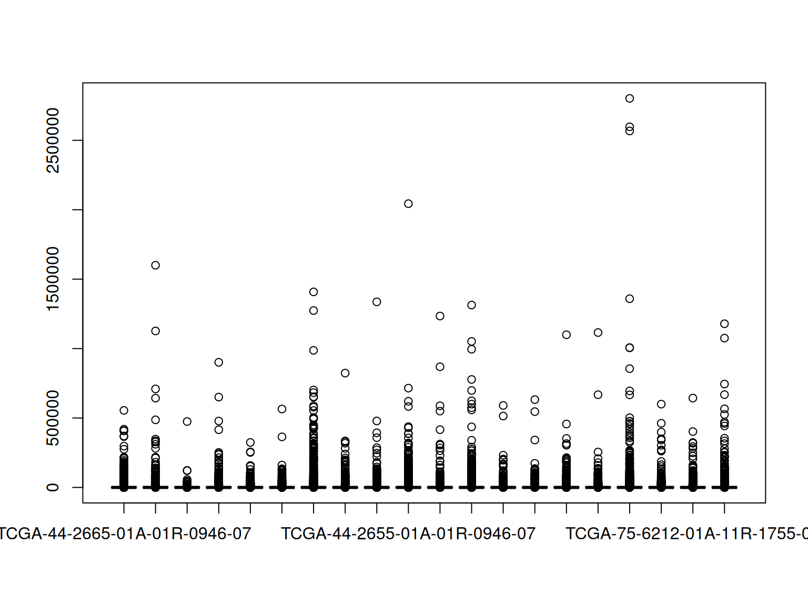
# To make readable the boxplot on all we reduce the string of column names.
colnames(raw_count) <- substr(colnames(raw_count), 9, 20)
boxplot(log1p(raw_count)[, 1:20])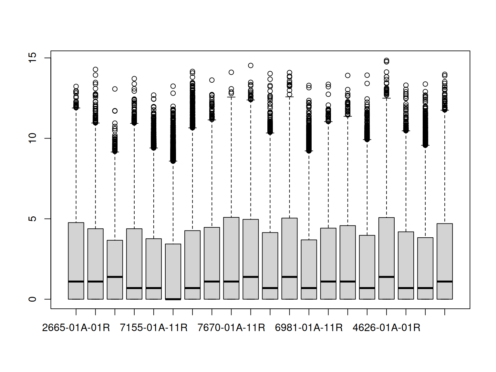
col <- luad$paper_expression_subtype
levels(col)[1] "prox.-inflam" "prox.-prolif." "TRU" levels(col) <- c(1:3)
boxplot(log1p(raw_count)[, 1:20], col = col, xlab = "Sample", ylab = "log1p expression", ylim = c(0, 20), las = 2, cex.axis = 0.7)
legend("top", legend = c("prox.-inflam","prox.-prolif.", "TRU"), col = 1:3, pch = 20, cex = 0.7, ncol = 2)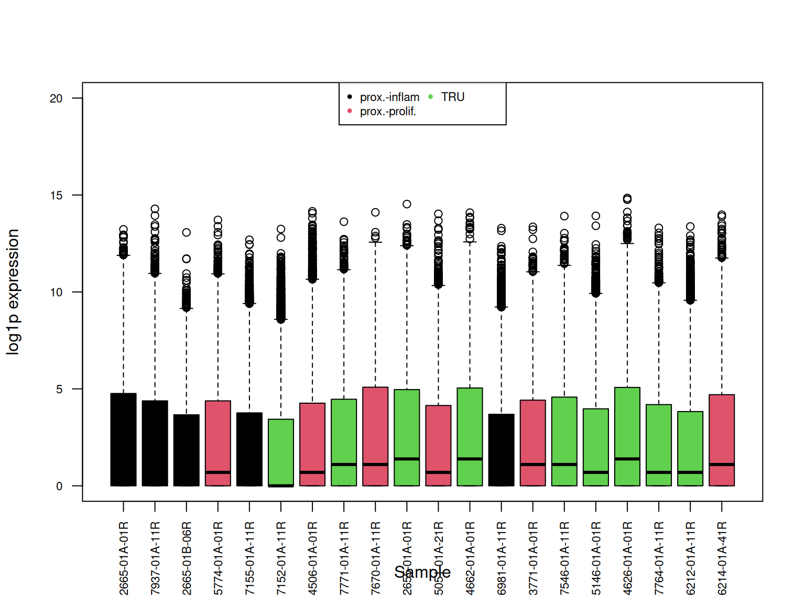
Exercise 2: Recreate the boxplot using tidyverse and ggplot2
library(ggplot2)
library(tidyr)
log1p <- log1p((raw_count)[, 1:20])
df <- as.data.frame(log1p)
df$gene <- rownames(df)
df_long <- pivot_longer(df, cols = -gene, names_to = "Sample", values_to = "Expression")
subtype <- colData(luad)$paper_expression_subtype[1:20]
names(subtype) <- substr(colnames(luad)[1:20], 9, 20)
df_long$Subtype <- subtype[df_long$Sample]
# Plot with ggplot2
ggplot(df_long, aes(x = Sample, y = Expression, fill = Subtype)) +
geom_boxplot(outlier.color = "black", outlier.shape = 1) +
theme_bw() + scale_fill_manual(values = c("prox.-inflam" = "black", "prox.-prolif." = "red", "TRU" = "green")) +
theme(axis.text.x = element_text(angle = 45, hjust = 1)) +
labs(x = "Sample",
y = "log1p(Expression)",
fill = "Subtype")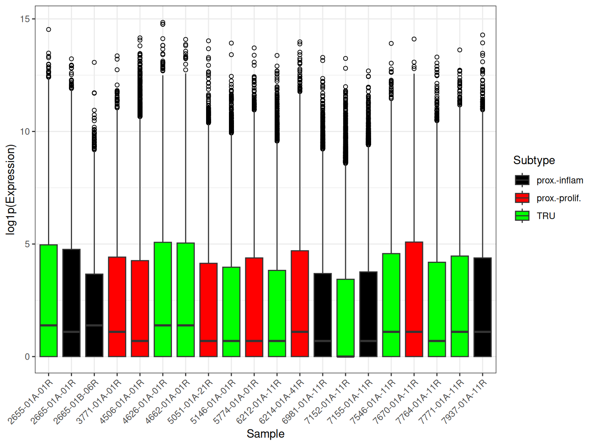
MD or MA charts
In addition to the boxplot we can use the MA or MD charts.
To visualize the MA plot we can use the plotMA() function of limma package.
An MA plot visualizes differential expression results by plotting log2 fold change (M = log2(sample/virtual sample)) on the y-axis against mean normalized expression (A = average log counts) on the x-axis.
Most points should cluster around the horizontal line at M=0 (no change). Trends or biases away from this line indicate normalization issues or intensity-dependent effects. Outliers with large |M| values (>2) highlight highly differentially expressed genes.
limma::plotMA(log1p(raw_count), main = "", xlab = "A", ylab = "M")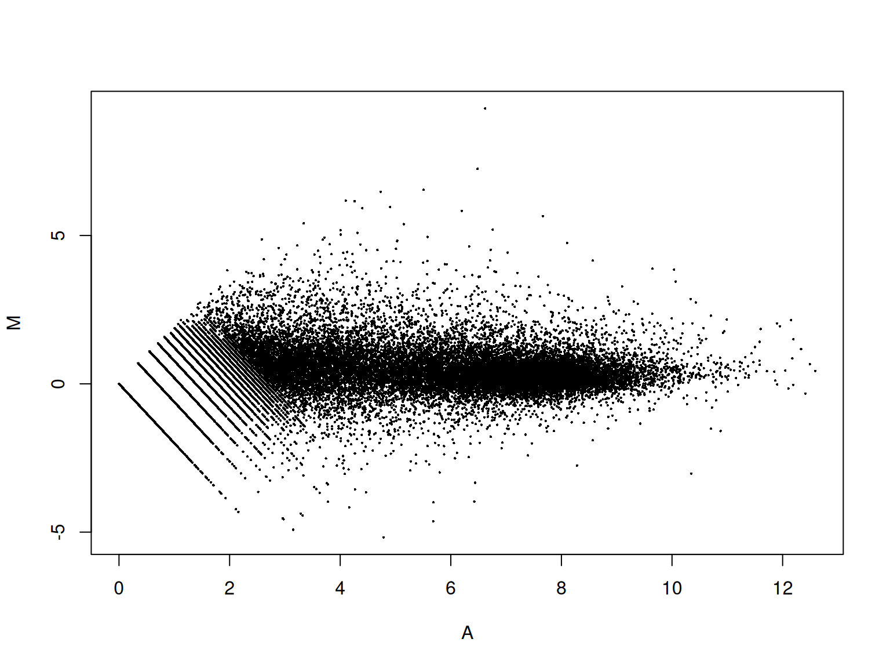
While, to visualize the MD plot we can use the MDplot() function of the EDASeq package. In particular, we choose a pair of experiments for comparison (6 and 7 samples). In this case, we use the raw count matrix.
MDPlot(raw_count, c(6, 7))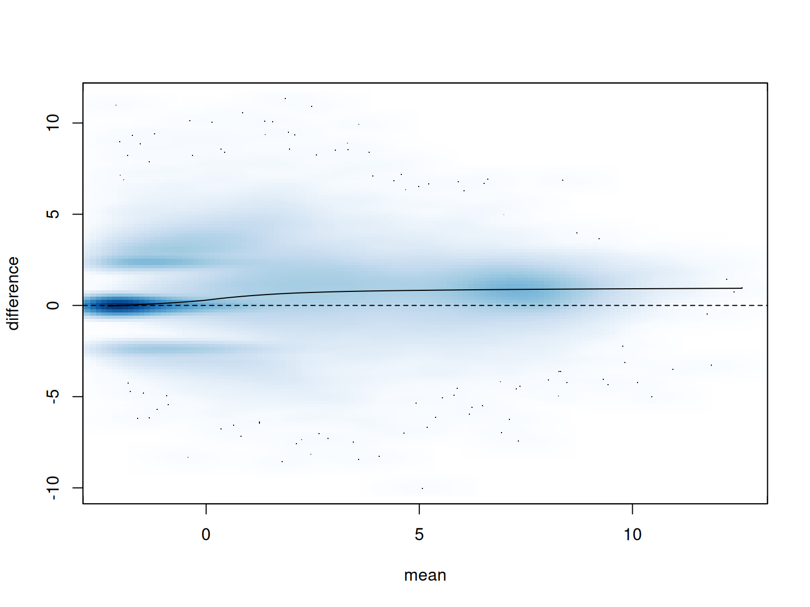
MDPlot(raw_count, c(7, 6))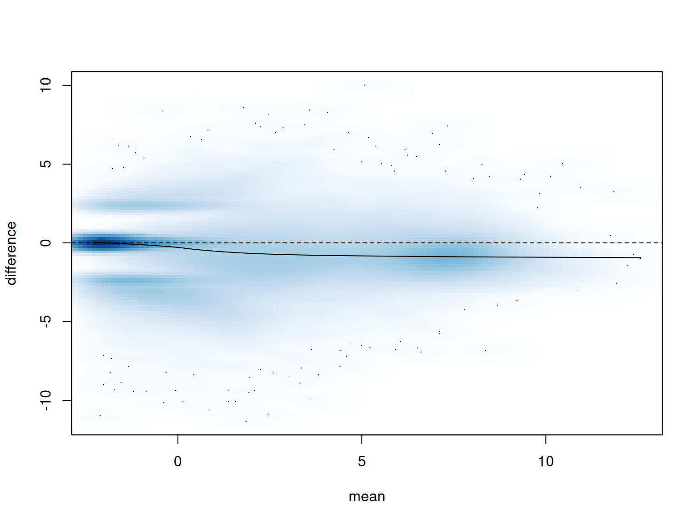
RLE plot
Next, we visualize the data using an RLE (Relative Log Expression) plot before normalization, using the plotRLE() function from the EDASeq package.
RLE plots are useful to check the differences between samples. Ideally, the median of boxplot should be centered around zero. Deviations indicate technical variation or differences in library size that may need normalization.
plotRLE(raw_count, outline = FALSE, las = 2,
ylab = "RLE", main = "RLE of raw counts", col = col)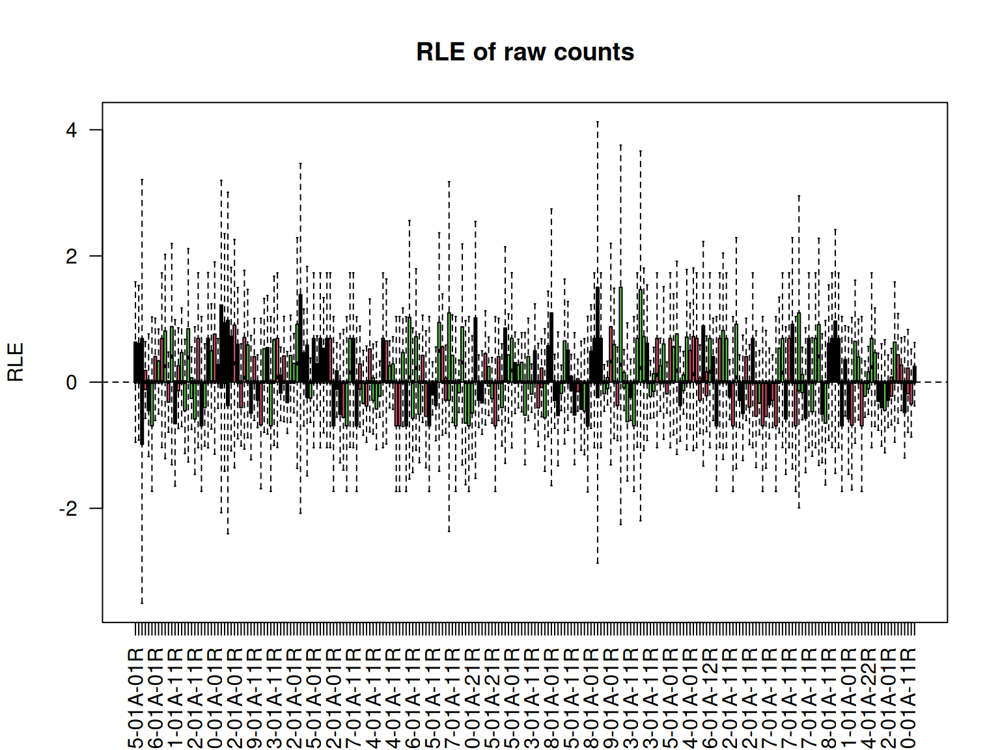
As expected the RLE graphs are very heterogeneous. In the next lession we will check how they change after normalization.
Principal Component Analysis
Principal component analysis (PCA) is used to project a high-dimensional dataset (where the number of dimensions equals the number of genes or transcripts) onto few dimensions. In R, PCA can be computed using the built-in prcomp() function.
pca <- prcomp(t(log1p(raw_count)))
summary(pca)$importance[, 1:20] PC1 PC2 PC3 PC4 PC5 PC6
Standard deviation 74.64299 69.76526 36.85177 34.61316 30.07878 29.36374
Proportion of Variance 0.16064 0.14033 0.03915 0.03454 0.02608 0.02486
Cumulative Proportion 0.16064 0.30097 0.34012 0.37466 0.40075 0.42561
PC7 PC8 PC9 PC10 PC11 PC12
Standard deviation 26.26843 25.36954 24.13573 22.05843 21.11264 20.32502
Proportion of Variance 0.01989 0.01856 0.01680 0.01403 0.01285 0.01191
Cumulative Proportion 0.44550 0.46406 0.48085 0.49488 0.50773 0.51964
PC13 PC14 PC15 PC16 PC17 PC18
Standard deviation 19.09950 18.48902 17.87242 16.90135 16.62487 16.24443
Proportion of Variance 0.01052 0.00986 0.00921 0.00824 0.00797 0.00761
Cumulative Proportion 0.53016 0.54002 0.54923 0.55746 0.56543 0.57304
PC19 PC20
Standard deviation 15.90422 15.65503
Proportion of Variance 0.00729 0.00707
Cumulative Proportion 0.58033 0.58740The proportion of variance explains how much of the variation in a dataset can be attributed to a specific component. For example, the proportion variance attributes to the first component is equal to 0.16.
autoplot(pca)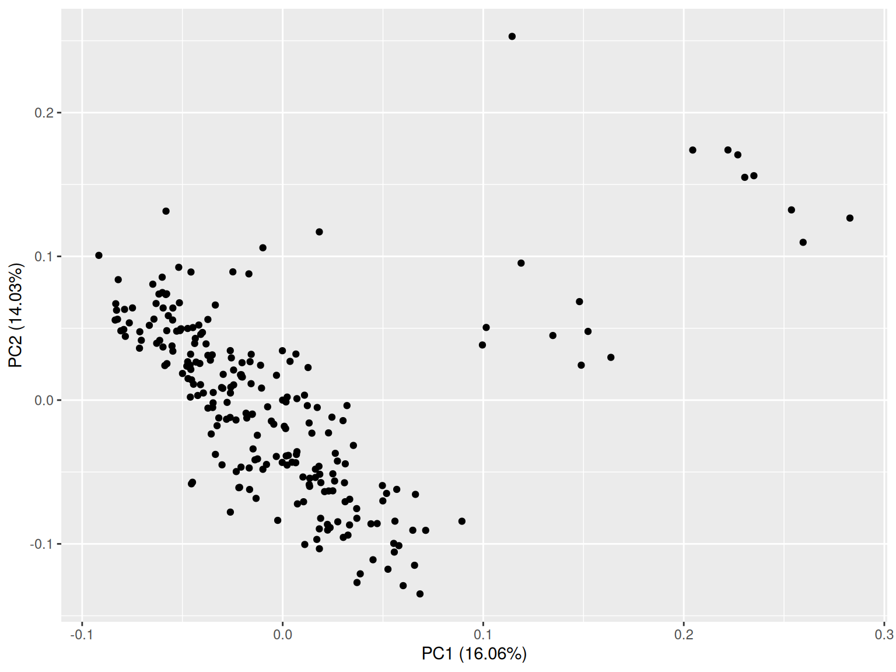
The Principal Component matrix has the same dimensions as the original data matrix; however, many of the PCs may not be informative, so a reduction in the number of PCs is typically required. To do so, it is useful to examine the amount of variance explained by each new PC vector, using the scree plot criterion. The number of components to be chosen corresponds variance drops dramatically in size.
In this case we choose the first two components.
screeplot(pca, type = c("lines"))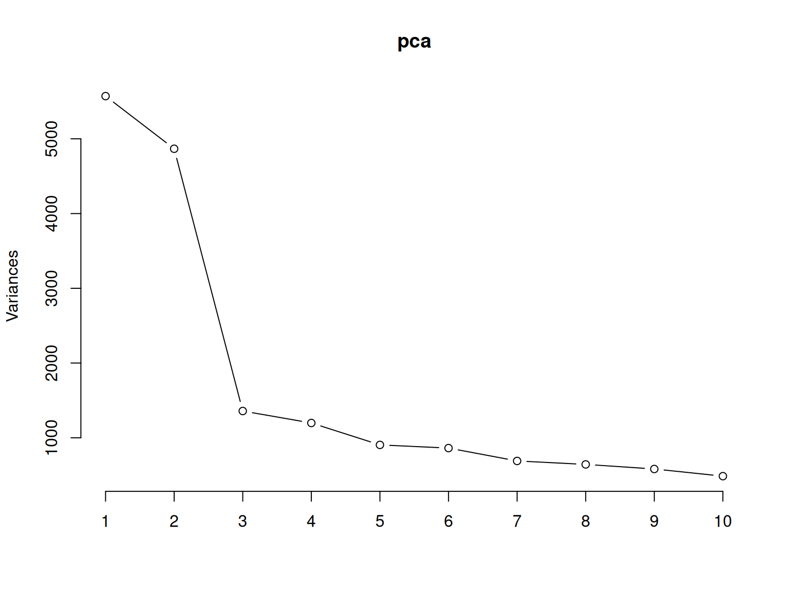
Filtering (?)
In the previous part of the lesson, genes with all zero counts were removed. However, this is not sufficient because it does not eliminate genes with very low counts. We decided to keep only the genes with raw counts \(\geq 10\).
luad_sel <- luad[rowSums(assay(luad, "raw_count")) >= 10, ]
luad_selclass: RangedSummarizedExperiment
dim: 52215 237
metadata(1): data_release
assays(2): raw_count normalized_count
rownames(52215): ENSG00000000003 ENSG00000000005 ... ENSG00000288674
ENSG00000288675
rowData names(10): source type ... hgnc_id havana_gene
colnames(237): TCGA-44-2665-01A-01R-0946-07
TCGA-97-7937-01A-11R-2170-07 ... TCGA-55-6971-01A-11R-1949-07
TCGA-97-7554-01A-11R-2039-07
colData names(93): barcode patient ... paper_Ploidy.ABSOLUTE.calls
paper_Purity.ABSOLUTE.callsNormalization
Normalization of RNA-seq read counts is an essential procedure that corrects for non-biological variation of samples due to library preparation, sequencing read depth, gene length, mapping bias and other technical issues. Normalization is composed of two main steps: within-sample normalization and between-sample normalization.
Within samples normalization
The within-samples normalization is necessary for GC-content bias.
come giustifichiamo che non gliela facciamo vedere? mettiamo un png che mostra la differenza tra le due?
e diciamo che in questi dati non ne abbiamo bisogno + reference link per farla
Between samples normalization
After the within normalization we can compute the between normalization, using an R packages: edgeR.
We can utilize the calcNormFactors and cpm functions to estimate the normalizing factors for RLE, TMM, upper quartile, and total count normalizations.
raw_count <- assay(luad_sel, "raw_count")
lbs <- calcNormFactors(raw_count, method = "RLE")calcNormFactors has been renamed to normLibSizesrle <- cpm(raw_count, lib.size = lbs * colSums(raw_count))
lbs <- calcNormFactors(raw_count, method = "TMM")calcNormFactors has been renamed to normLibSizestmm <- cpm(raw_count, lib.size = lbs * colSums(raw_count))
lbs <- calcNormFactors(raw_count, method = "upperquartile")calcNormFactors has been renamed to normLibSizesuq <- cpm(raw_count, lib.size = lbs * colSums(raw_count))
tc <- cpm(raw_count)Boxplot
Expression matrix visualization after normalization using boxplot.
boxplot(log2(raw_count + 1), outline = FALSE, las=2,
ylab = "log(count+1)", main = "Before normalization", xaxt = 'n')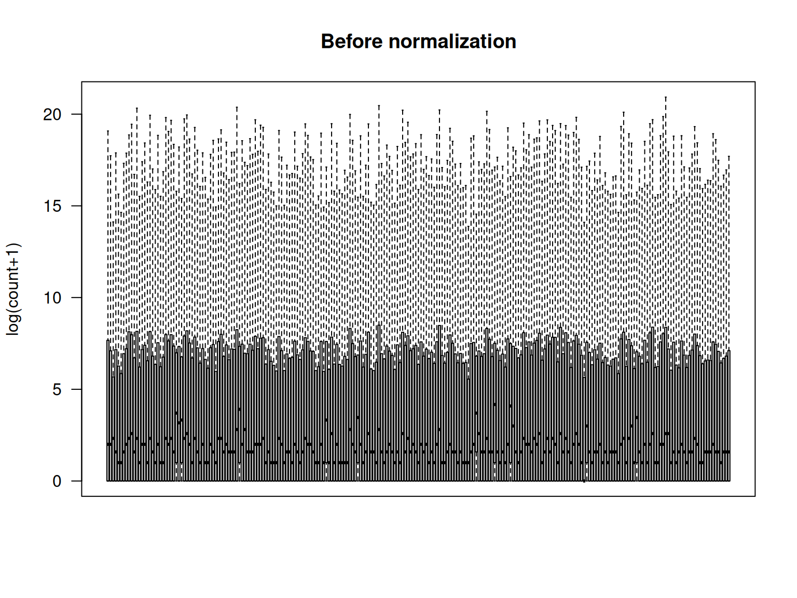
boxplot(log2(tc + 1), outline = FALSE, las = 2,
ylab = "log(count+1)", main = "Boxplot Total count", xaxt='n')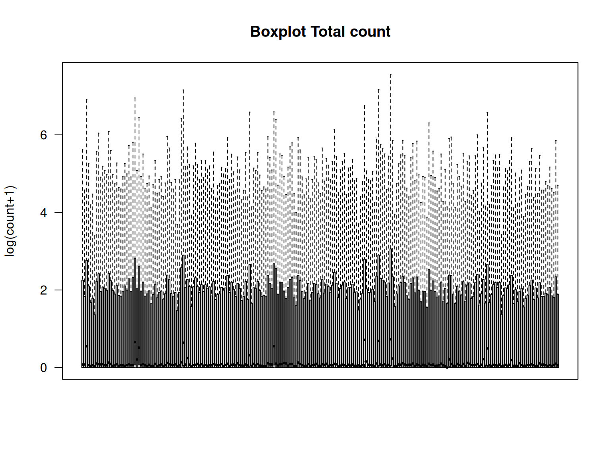
boxplot(log2(rle + 1), outline=FALSE, las=2,
ylab = "log(count+1)", main = "Boxplot RLE", xaxt = 'n')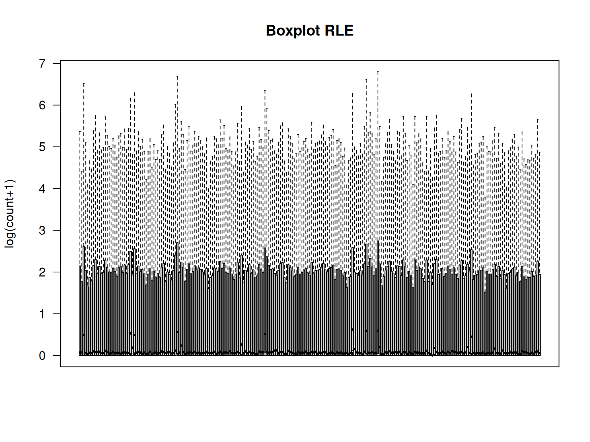
boxplot(log2(tmm + 1), outline=FALSE, las=2,
ylab = "log(count+1)", main = "Boxplot TMM", xaxt = 'n')boxplot(log2(uq + 1), outline=FALSE, las=2,
ylab = "log(count+1)", main = "Boxplot Upper quartile", xaxt = 'n')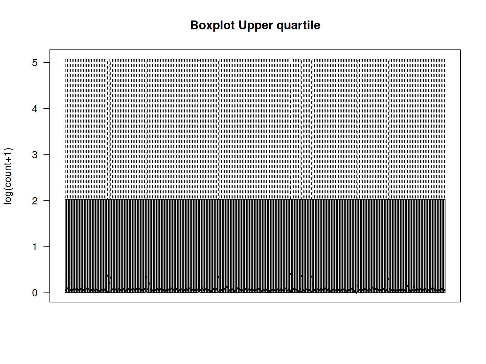
RLE plot
Expression matrix visualization after normalization using RLE plot.
col <- luad$paper_expression_subtype
levels(col) <- c(1:3)
EDASeq::plotRLE(raw_count, outline = FALSE, las=2, col=col,
ylab = "RLE", main = "RLE before normalization", xaxt='n')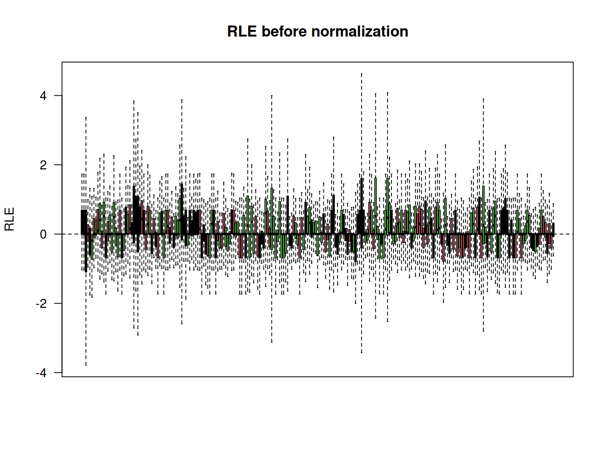
EDASeq::plotRLE(tc, outline = FALSE, las=2, col=col,
ylab = "RLE", main = "RLE total count", xaxt='n')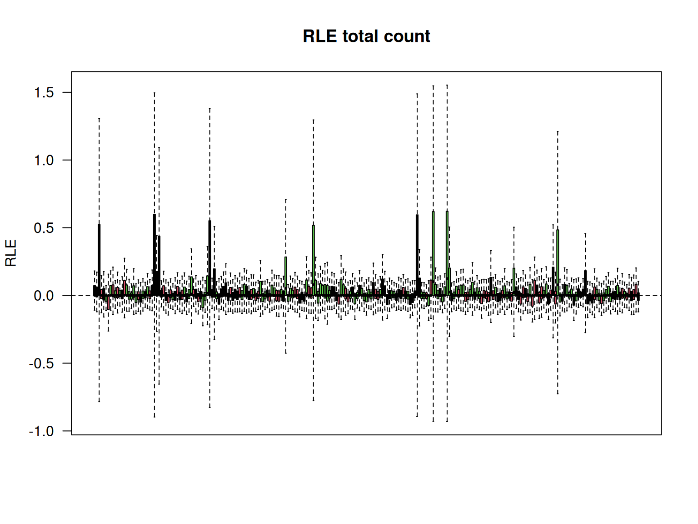
EDASeq::plotRLE(tmm, outline = FALSE, las=2, col=col,
ylab = "RLE", main = "RLE TMM", xaxt='n')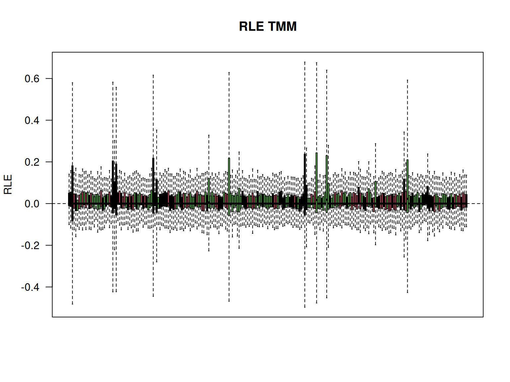
EDASeq::plotRLE(rle, outline = FALSE, las=2, col=col,
ylab = "RLE", main = "RLE RLE", xaxt='n')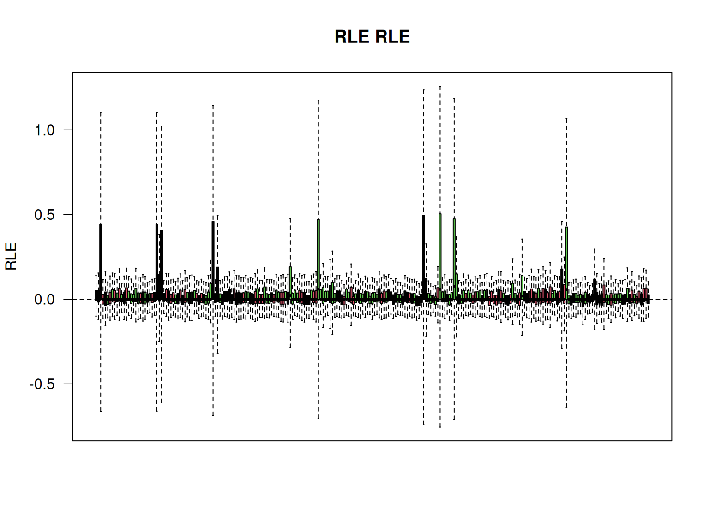
EDASeq::plotRLE(uq, outline = FALSE, las=2, col=col,
ylab = "RLE", main = "RLE upper quartile", xaxt='n')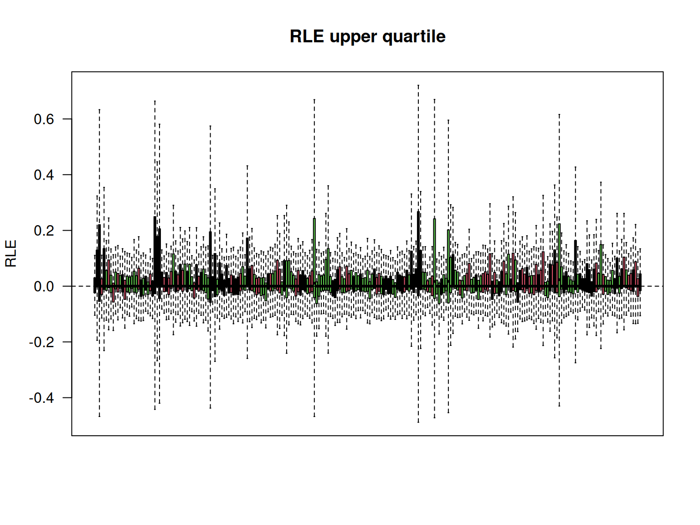
Principal component analysis
PCA analysis in the context of normalization performance assessment is useful only if an a priori biological information on sample stratification is available. It is reasonable to select the normalization that better recognize the known stratification.
Now let’s see the basic functions of R to make PCA and then we will use the data normalized with the TMM to explore the results. Finally we will use the plotPCA function to plot scores across all the normalizations.
luad_pca <- prcomp(t(log1p(tmm)))
tmp <- summary(luad_pca)
tmp$importance[, 1:20] PC1 PC2 PC3 PC4 PC5 PC6
Standard deviation 35.24617 22.55519 21.91885 18.05110 17.48964 16.16087
Proportion of Variance 0.16095 0.06591 0.06224 0.04222 0.03963 0.03384
Cumulative Proportion 0.16095 0.22686 0.28910 0.33132 0.37095 0.40478
PC7 PC8 PC9 PC10 PC11 PC12
Standard deviation 14.31932 13.36711 12.80892 12.18753 10.71250 10.51829
Proportion of Variance 0.02656 0.02315 0.02126 0.01924 0.01487 0.01433
Cumulative Proportion 0.43135 0.45450 0.47575 0.49500 0.50986 0.52420
PC13 PC14 PC15 PC16 PC17 PC18
Standard deviation 10.20947 9.695005 9.448997 9.222683 8.555611 8.404443
Proportion of Variance 0.01350 0.012180 0.011570 0.011020 0.009480 0.009150
Cumulative Proportion 0.53770 0.549880 0.561450 0.572470 0.581950 0.591100
PC19 PC20
Standard deviation 8.021178 7.872259
Proportion of Variance 0.008340 0.008030
Cumulative Proportion 0.599440 0.607470autoplot(luad_pca)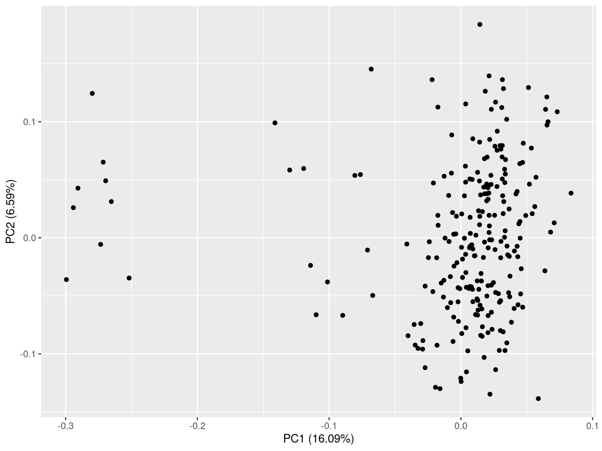
screeplot(luad_pca, type = c("lines")) 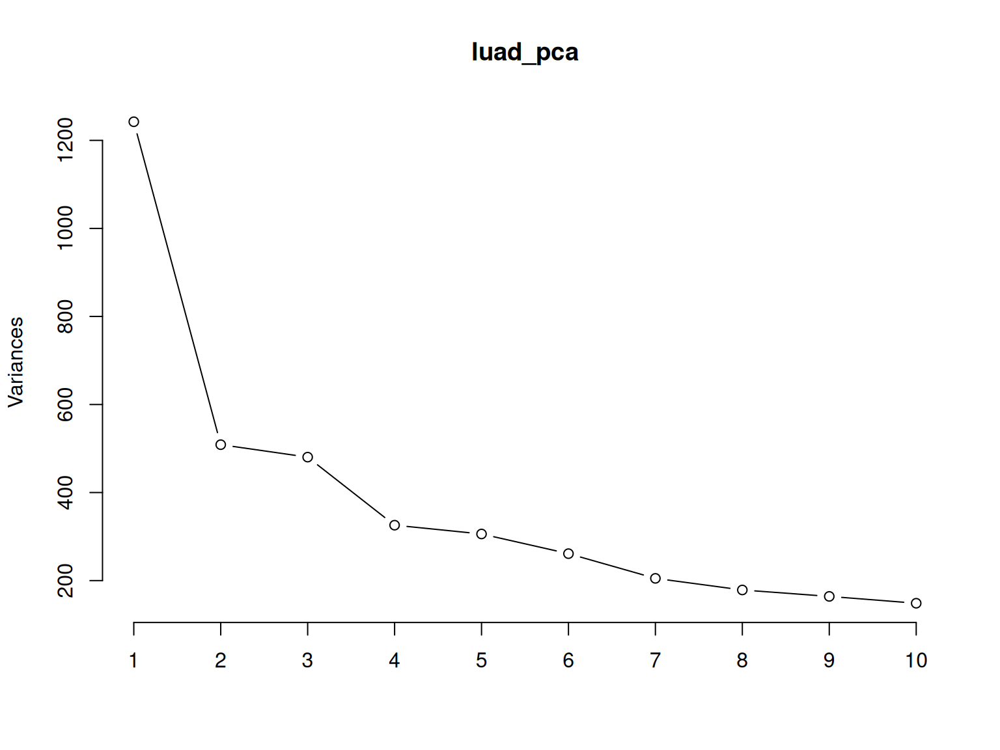
Now we use the plotPCA:
EDASeq::plotPCA(tc, k=3, labels=F, col=as.numeric(col), pch=20)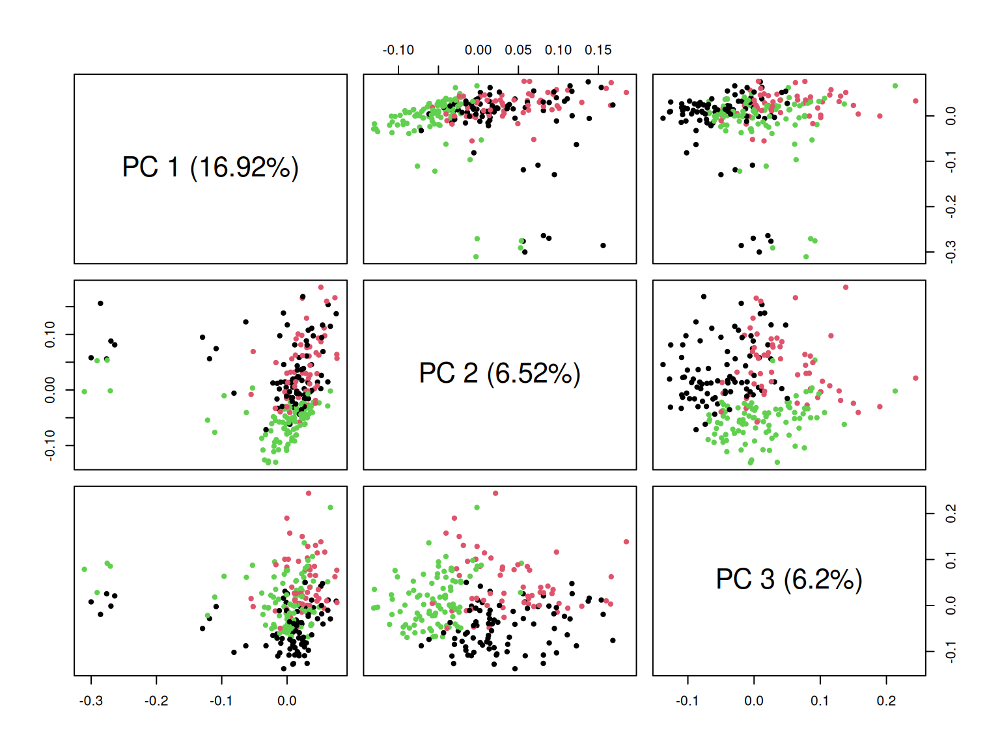
EDASeq::plotPCA(tmm, k=3, labels=F, col=as.numeric(col), pch=20)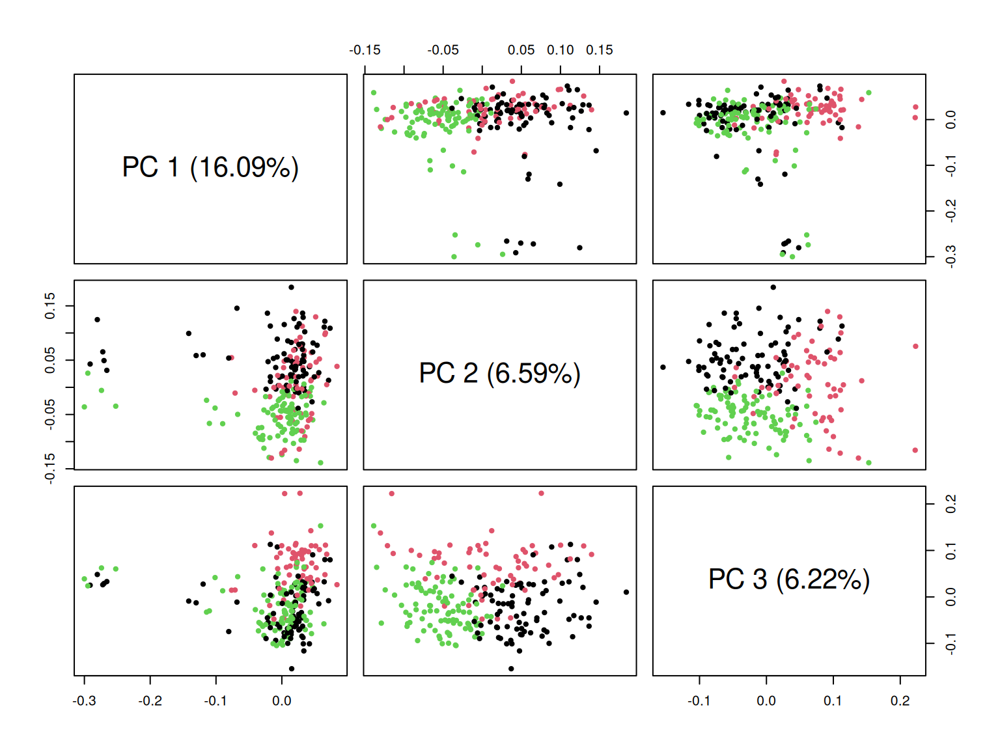
EDASeq::plotPCA(rle, k=3, labels=F, col=as.numeric(col), pch=20)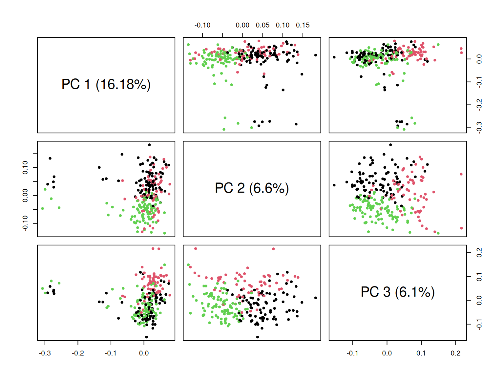
Save the data for the next tutorial
save(list = c("luad_sel", "luad", "tmm", "rle", "tc", "raw_count"), file = "normalization.RData")